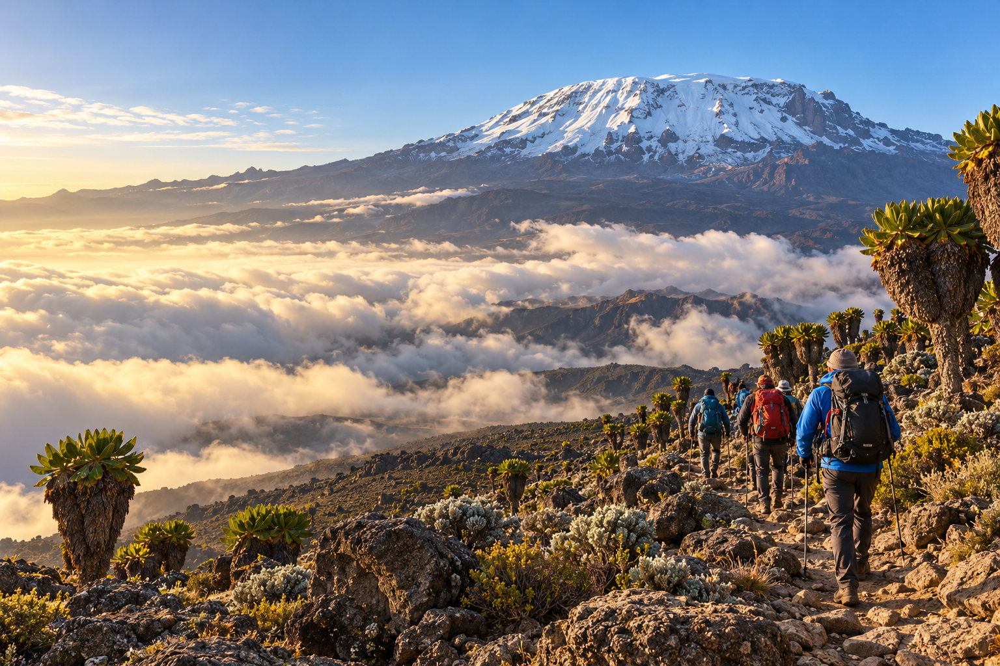
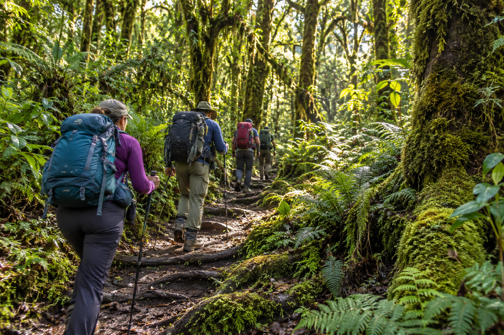
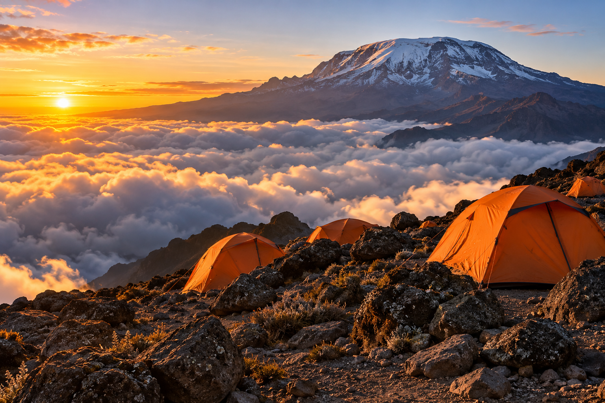

Walk Through the Forest
Begin among tall trees, leafy pathways and the sounds of the mountain forest.
A journey through changing landscapes
to the roof of Africa.
A Kilimanjaro trek is a journey through remarkable scenery, from lush forest to open alpine terrain. Each day brings a new perspective, a different rhythm and moments to remember.
The experience combines steady walking, life on the trail and the support of a mountain team. Reaching higher ground requires preparation, patience and respect for the conditions.
Explore the routes

Begin in lush forest, with leafy pathways and the sounds of the mountain.
Higher up, the landscape opens to expansive views and unforgettable scenery.
Begin among tall trees, leafy pathways and the sounds of the mountain forest.
Watch the scenery change as the trail opens to wide views and distinctive vegetation.

Rest, share meals and prepare for the next day with your trekking team.
Higher elevations bring a demanding experience. Conditions and individual wellbeing guide every decision.
A varied journey through changing landscapes, with camp-based overnight stays.
Discuss MachameA scenic approach through diverse mountain terrain. Discuss an itinerary with time to acclimatise.
Discuss LemoshoA route known for hut-based overnight stays. Ask our team about route arrangements.
Discuss MaranguRoute choice affects pace, overnight arrangements and time available for acclimatisation. Images illustrate the mountain experience.
Official Kilimanjaro visitor guideBe prepared for different temperatures and weather as elevation changes.
Allow time for preparation, rest and a pace suited to the journey.
Guides and mountain teams support the daily rhythm of the trek.
Discuss equipment and altitude considerations with appropriate professionals before travelling.
Consult a qualified travel health professional before your trek. Tell your guide promptly about symptoms. Do not climb higher while you have altitude illness symptoms; worsening symptoms require descent and medical help.
Read CDC altitude guidanceSpeak with our team about the experience and a suitable itinerary.